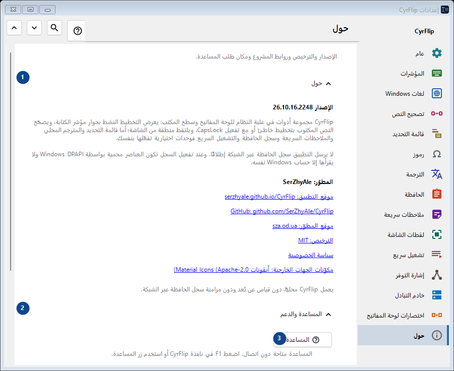
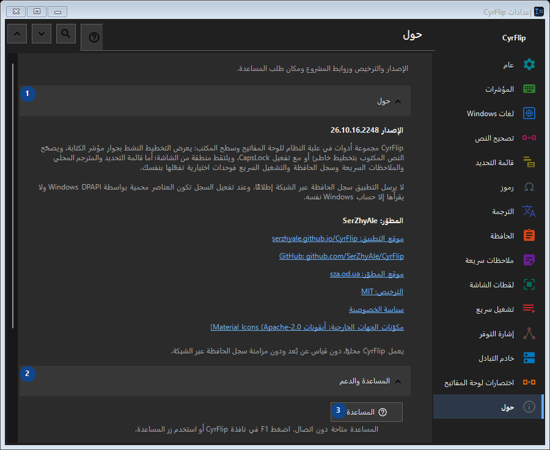

حول
الغرض
الإصدار والترخيص وروابط المشروع ومكان طلب المساعدة.


ترتيب الاستخدام
تُطبق الإعدادات فورًا. لا يوجد ترتيب إلزامي؛ استخدم المجموعات أدناه.
العناصر
1. حول
استخدم هذا الأمر لتنفيذ الإجراء المذكور. اقرأ أي طلب تأكيد قبل الموافقة.
اختصاراتك2. المساعدة والدعم
استخدم هذا الأمر لتنفيذ الإجراء المذكور. اقرأ أي طلب تأكيد قبل الموافقة.
اختصاراتك3. المساعدة
المساعدة متاحة دون اتصال. اضغط F1 في نافذة CyrFlip أو استخدم زر المساعدة.
اختصاراتك4. عرض جولة الترحيب..
تعرّف على CyrFlip وأعدّه.
اختصاراتك5. تشخيص موضع مؤشر الكتابة...
ينشئ تقريرًا محليًا عن كيفية رؤية Windows و UI Automation لمؤشر الكتابة. استخدمه فقط إذا لم تظهر العلامة أو ظهرت في مكان خاطئ في تطبيق معيّن.
اختصاراتك6. إرسال السجلات إلى المؤلف..
يجمع سجلات CyrFlip في أرشيف واحد ويفتح رسالة إلى المؤلف مع هذا المرفق. أنت من يرسل الرسالة - CyrFlip لا ينقل أي شيء عبر الشبكة. سجل الحافظة لا يدخل الأرشيف أبدًا.
اختصاراتك